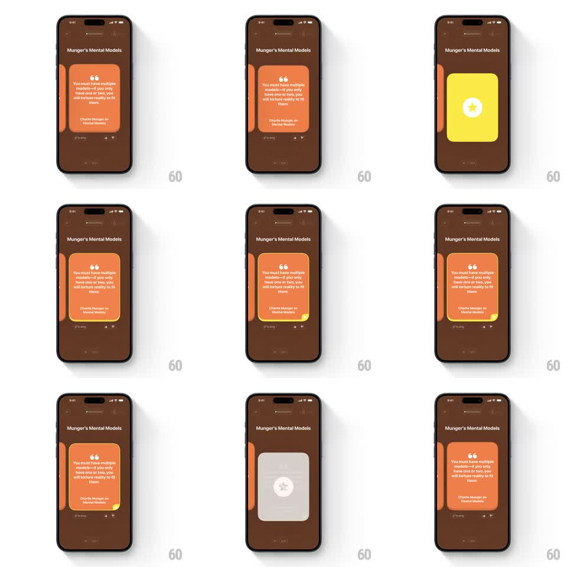

Media
Frame-by-frame

Rebuild this interaction 1:1: Eimi's pull-to-favorite - dragging the quote card down stretches it, and past the threshold it flips into a yellow starred card with a springy snap before settling back.

Rebuild this interaction 1:1: Eimi's pull-to-favorite - dragging the quote card down stretches it, and past the threshold it flips into a yellow starred card with a springy snap before settling back. ## Integration Integration: stack-agnostic spec - springs given as stiffness/damping, timed motions as duration + curve; map every value to your framework and animation library of choice. ## Scene Eimi quote screen, dark brown: "Munger's Mental Models" header, a tall orange quote card (quotation mark, quote text, attribution), a green edge-glow accent, and a yellow favorited state - same card shape, yellow fill, white star in a circle at center. ## Motion spec Pattern: pull-down gesture that flips the card into its starred state. - Drag down: the card follows the finger 1:1 for the first 60px, then resists (translate = 60 + (drag-60)*0.4) and stretches vertically (scaleY up to 1.06) - rubber-band tension. - Past 120px the card commits: it flips its content with a quick vertical squash (scaleY -> 0.7 -> 1.05 -> 1, 300ms) as the face crossfades orange-quote -> yellow-star (200ms), and snaps back up to rest with a spring (~300/14, one bounce). - The star itself pops a beat after the yellow lands (scale 0.5 -> 1.15 -> 1, spring ~420/15) with a soft haptic thump. - Release before threshold: the card slides back with the same spring, unchanged. - The green edge-glow sweeps the card's border once on commit (300ms) - the favorited receipt. ## Calibration - The yellow state replaces the quote face entirely for ~600ms, then crossfades back to the quote (300ms) - a peek, not a permanent flip. - Resistance curve must be obvious - the pull should feel like stretching taffy. ## Reduced motion Tap the card edge to toggle: faces crossfade (250ms), no drag physics. ## Don't miss - The card's rounded corners and shadow stay constant through the squash. - The attribution and quote never reflow - the face swap is a crossfade, not a re-layout.